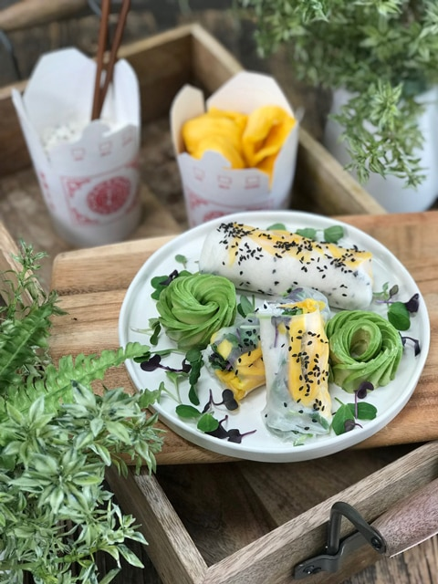
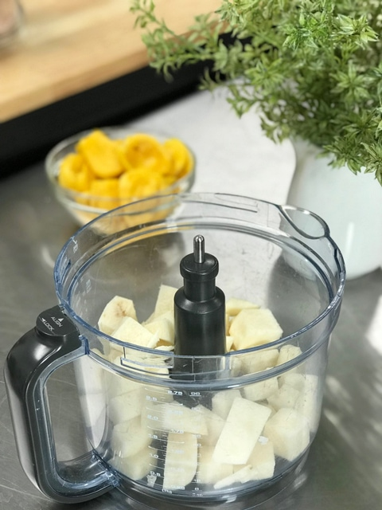
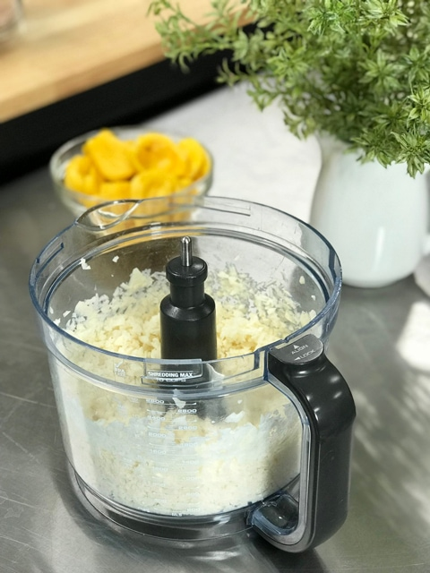
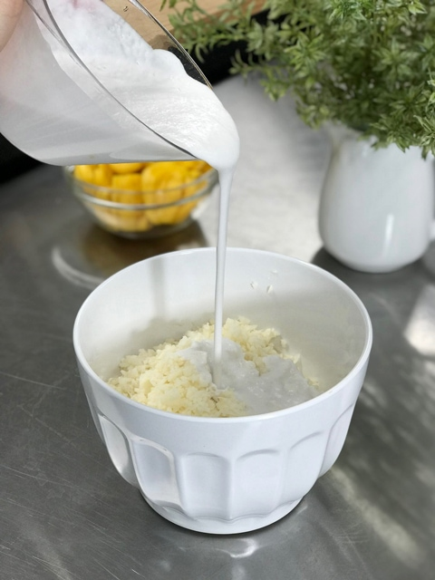
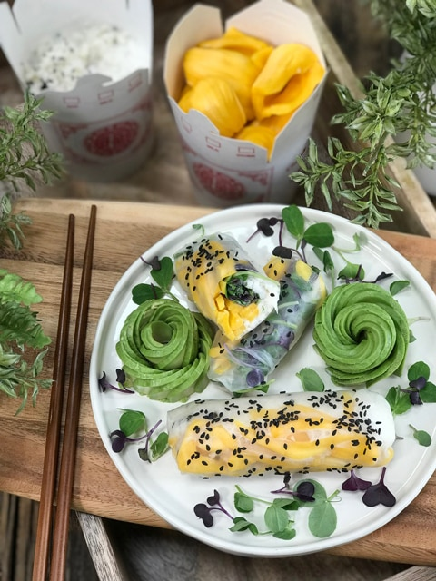

Coconut Jicama Rice and Jackfruit Spring Rolls
Coconut Jicama Rice and Jackfruit Wraps just so happen to be vegan, dairy-free, grain-free as well as gluten-free. It’s so delicious with the creamy, sweet and slightly salty jicama rice, drenched in coconut cream and enjoyed bite after bite with fragrant jackfruit. Well… that’s my story, and I am sticking to it.
Wrap Options
Life is full of options, and the same goes for this recipe. Today, I used rice paper, but you could also use coconut wraps or collard leaves.
The beauty of rice paper is that the ingredients become art as it is showcased in the thin, transparent wrap. You can pick these wraps up at your local grocery store, often in the Asian section. They are not raw though, so you will need to decide what your priorities are.
Working with Ingredients
Each ingredient used in this recipe is simple and straightforward, but I want to share just a few tidbits about each one to ensure success.
Jackfruit
- For this recipe, you will want to use RIPE jackfruit. You may think that is a no-brainer, but people use unripe jackfruit in other cooked vegan recipes, so I just wanted to clarify.
- To select a ripe one at the grocery store, look for one that gives off a sweet smell, which it will begin to do a few days before it is ripe. It should also give a little with gentle pressure.
- Ask the produce specialist to help select one. If they are whole, ask them to cut it into a portion that is reasonable for you to use.
- Remember these things can weigh up to 100 lbs! To learn more about them click (here).
Jicama
- No matter what technique I used to select jicama from the store, it always seemed to be partly bad inside once I got it home.
- It is now my golden rule to ask the produce specialist to select one and cut it in half.
- Choose those that are firm, with smooth skin that’s not cracked or bruised. It should look fresh, not dry or shriveled. Make sure there are no soft or wet spots on the jicama skin.
- Be sure to “rice” the jicama to rice-sized pieces. This will ensure the best mouth-feel to your dish. I explain how to do this below.
- To learn more about jicama, click (here).
Rice Paper
- I used to find rice paper difficult to work with, but I now realize that it just boiled down to inexperience. After working with it a few times, I now find it rather fun, and that my friends is how it ought to be.
- Before you start working with it, make sure that you have all the ingredients ready to go.
- Dip the rice paper in warm water. Rice paper is delicate and only needs a quick dip in warm water to soften. Do not “soak” the rice paper for too long because it will break down quickly, making the rolling more difficult.
- The rice paper should come out of the water still slightly firm and not fully fold on itself. Don’t worry if the rice paper might feel a little firm because once the rice paper lays on the rolling surface, it will continue to absorb the water on its surface and will become soft and gelatinous.
Regardless of what your experience is when it comes to working with any of these ingredients, don’t let any of it intimidate you. Just take your time and enjoy the process. I mentioned above that rice paper used to make me nervous to work with… to break that feeling I sacrificed one piece to monkey around with. I learned how to handle it, how to wet it properly, and in the end, I slapped it on my face as a facial mask and giggled away. I made peace with my rice paper. Haha, I hope you enjoy this refreshing and delicious treat. blessings, amie sue

Ingredients
- 3 cups (297 g) jackfruit flesh, sliced
- Rice paper
- Sprouted greens
- Black sesame seeds
Coconut “Rice”
- 4 cups (828 g) diced, peeled, jicama
- 2 cups (382 g) thick coconut milk
- 2 Tbs (30 g) Lakanto Monkfruit Sweetener (powdered)
- 1/2 tsp (1 g) pink Himalayan salt
Preparation
Jackfruit
- Once you have removed the pods from the jackfruit, slice them into thin slivers. Once done, set them aside.
Coconut Jicama Rice
- Peel and dice the jicama into small-medium chunks.
- Keep the jicama pieces fairly uniform in size so they break down evenly.
- Fit the food processor bowl with the “S” blade and place the jicama inside.
- Pulse roughly 7-10 times. The end goal is to create a rice-size. Pour into a medium-sized bowl.
- In the blender, combine the coconut milk, sweetener, and salt. Blending until creamy.
- You can use fresh young Thai coconut milk, blended into a thick creamy consistency or you can use canned organic, full-fat coconut milk.
- If you use canned, chill the can overnight to thicken the coconut milk. Use the whole can.
- You can use any sweetener that you want. Right now I am trying to keep our sugar intake on the lower side. I have been toggling between the Lakanto and the MarkusSweet.
- Pour the coconut cream over the jicama rice and mix well.
Assembly
- Wet the rice paper until it’s soft. Be careful—it will get sticky and fragile.
- Dip the rice paper in warm water. Rice paper is delicate and only needs a quick dip in warm water to soften. Do not “soak” the rice paper for too long because it will break down too quickly, making the rolling more difficult.
- The rice paper should come out of the water still slightly firm and not fully fold on itself. Don’t worry if the rice paper might feel a little firm because once the rice paper lays on the rolling surface, it will continue to absorb the water on its surface and will become soft and gelatinous.
- Lay wet rice paper on a rolling surface. I found that a plastic cutting board worked the best.
- Place it in front of you on a large plate or cutting board.
- Create a nice layer of sliced jackfruit in the center. Follow with a scoop of coconut jicama rice against the jackfruit.
- Leave about 1/2-1″ free on the sides so you can fold them in as you tuck and roll.
- Place a bunch of microgreens on top and pull the rice paper over the top, tucking and rolling until you have a nice tight roll in front of you.
- Sprinkle black sesame seeds on top, Enjoy!
-

-
Dice the jicama into small-medium cubes.
-

-
Pulse in a food pressor to create rice-sized pieces.
-

-
Add sweetened coconut cream and mix.
-

-
Create a beautiful wrap with rice paper or coconut wraps.
© AmieSue.com